这一课是 Part III 的收尾，也是全书最开放的一课：它不给你句子，只给你 20 个词 —— Friends、Money、Job、Marriage —— 然后要求「造尽可能多的问题」。这看起来最难，其实最容易：只要你有一个轮转模板。课本例题给了 Health 的 5 个问句作为示范，你学会那个模式，20 个话题都能现造。真正拉开差距的是最后一步：会追问。
第 7 条是这一课的关键句式，也是最容易说错的。What do you think is the best way…?
—— do you think 后面接陈述语序，is 不倒装。
✗ What do you think is it the best way? ✓ What do you think is the best way? 课本例题里就有这一句（What do you think is the best way to stay healthy?），说明它是标准问法。第 7、10、12、21 课都考过同一个点。
B · 追问的三个层次：从不会接话到能聊
造出问题只是第一步。真正的对话能力在于对方答完之后你怎么接。下面三层，每一层都比上一层深。
层次
你做什么
例子
第一层：跟进细节
对方答了什么，就追问那个信息
对方说「我每周跑三次」→ Where do you run? / Do you run alone?
第二层：问对比
「和以前比」「和别人比」
Was it the same five years ago? / Do your friends do the same?
第三层：问理由
追问对方没说出口的动机
What made you start? / What do you get out of it?
第一层最容易，第三层最有用。
大部分人的对话卡在第一层 —— 问完「你多久跑一次」，对方答「三次」，然后就没了。
第三个问题才是让对话继续的那一个。What made you start? 这一句几乎对所有话题都成立。
What to ask about课本 5 句的顺序：总括（怎么管理）→ 频率（运动、体检）→ 方法（最好的办法）→ 程度 + 观点（压力有多大影响）。这就是「从事实到观点」的递进。
Questions you can ask①How do you manage your health? ②How often do you exercise? ③How often do you get a checkup? ④What do you think is the best way to stay healthy? ⑤How much of a problem do you think stress is in terms of our overall health?
第 ⑤ 句是本课最值得学的一句。How much of a problem do you think X is in terms of Y?
—— 这个句式问的是程度，而且自带一个评价框架（in terms of Y）。它比 Do you think stress is bad? 高一个量级。
课本脚注：in terms of = 就……而言；overall = 总体的。
把这个句式搬到 20 个话题上，每个都能用。
What to ask about朋友。可以问「有几个」「多久见」「怎么定义朋友」「朋友和家人的区别」。
Questions you can ask①How many close friends do you have? ②How often do you see them? ③What makes someone a close friend rather than just an acquaintance? ④Has anyone ever stopped being your friend? What happened? ⑤What do you think is the hardest thing about keeping friends as an adult?
02
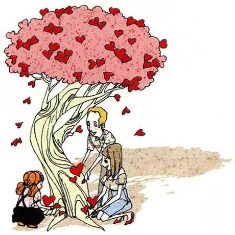
Family
The topicFamily
What to ask about家庭。可以问「联系频率」「谁管什么」「和父母的关系变没变」。
Questions you can ask①How often do you see your family? ②Who are you closest to in your family? ③What has changed in your family in the last ten years? ④How has your relationship with your parents changed since you became an adult? ⑤What do you think is the hardest part of being a parent?
03
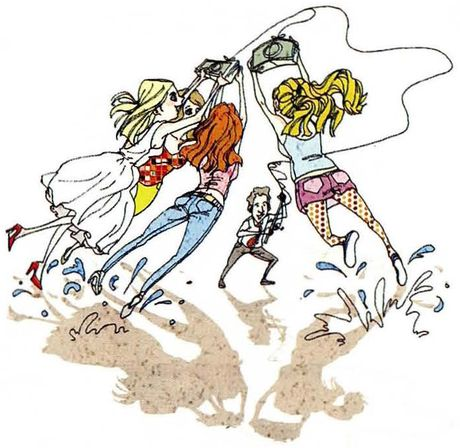
Money
The topicMoney
What to ask about钱。最容易展开的话题之一：收入、储蓄、消费观、和父母谈钱。
Questions you can ask①What do you spend most of your money on? ②How much do you save each month? ③Do you talk about money with your friends? ④What's the biggest purchase you've ever regretted? ⑤How much of a problem do you think comparison between people is, in terms of how we spend?
04
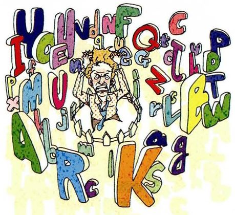
English
The topicEnglish
What to ask about英语。你最熟的话题 —— 但正因为熟，容易说成陈词滥调。要往具体问。
Questions you can ask①When did you start learning English? ②What do you find hardest about it? ③How often do you use English outside class? ④Has your reason for learning it changed since you started? ⑤What do you think is the best way to improve speaking, specifically?
05
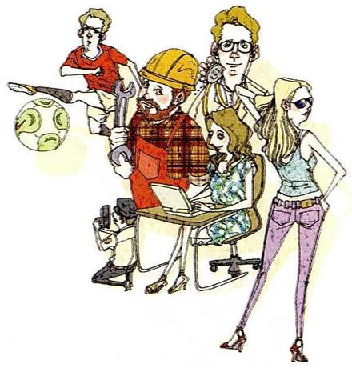
Job
The topicJob
What to ask about工作。可以问「做什么」「怎么得到」「最讨厌哪部分」「理想工作」。
Questions you can ask①What do you do? ②How did you get into that? ③What's the worst part of the job? ④If you could change one thing about it, what would it be? ⑤What do you think matters more, the work itself or the people you work with?
06
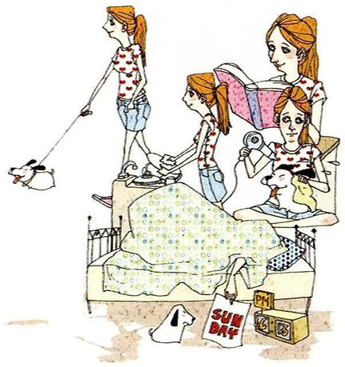
Weekend
The topicWeekend
What to ask about周末。轻松，适合热场。可以问「通常做什么」「理想周末」「周末够不够长」。
Questions you can ask①What do you usually do at the weekend? ②How often do you do nothing at all? ③What would your perfect weekend look like? ④When did you last have a really good weekend? ⑤Do you think two days is enough to recover?
07
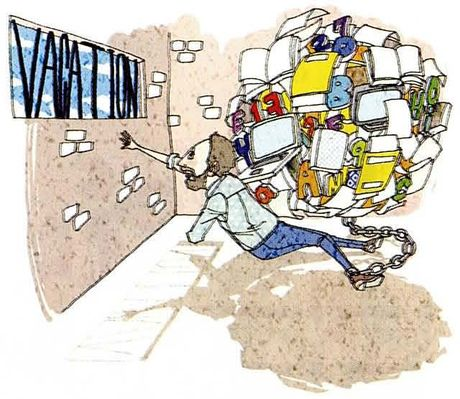
Vacation
The topicVacation
What to ask about假期。可以问「上次去哪」「理想去哪儿」「长假短假哪个好」。
Questions you can ask①Where did you go on your last vacation? ②How long was it, and did that feel like enough? ③Do you prefer a long trip or several short ones? ④What do you always pack and never use? ⑤What do you think is the point of travelling, honestly?
08
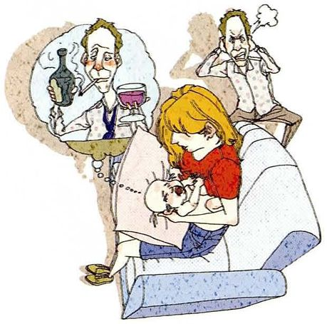
Smoking and drinking
The topicSmoking and drinking
What to ask about抽烟喝酒。敏感度中等，按第 15 课的方法处理：诚实但不过问隐私。
Questions you can ask①Do you smoke or drink at all? ②When did you start, and what made you start? ③Have you ever tried to stop? ④Does it bother you when other people smoke near you? ⑤How much of a problem do you think drinking is in your culture, compared with smoking?
09
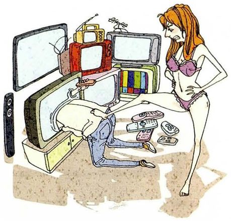
TV
The topicTV
What to ask about电视。这题现在很好聊 —— 因为很多人已经不看了，正好可以问那个转变。
Questions you can ask①How much TV do you watch in a normal week? ②What do you watch when you're too tired to think? ③Has what you watch changed in the last five years? ④Do you watch with anyone, or alone? ⑤Do you think streaming has made TV better or just more?
10
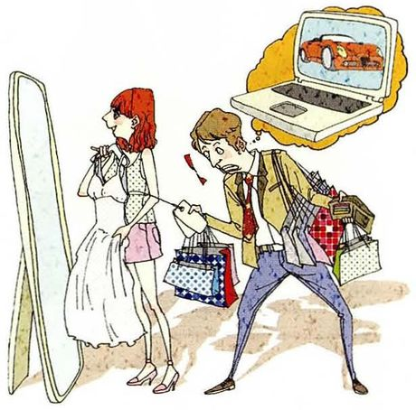
Shopping
The topicShopping
What to ask about购物。两条好线索：线上和线下的对比、买了后悔的东西。
Questions you can ask①Do you shop online or in person? ②How often do you buy something you didn't plan to? ③What was the last thing you bought and regretted? ④Do you enjoy shopping, or is it a chore? ⑤What do you think shops will look like in twenty years?
11
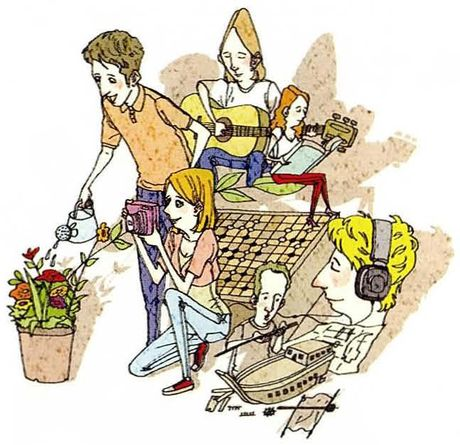
Hobbies
The topicHobbies
What to ask about爱好。最容易聊开的话题，因为它直接连着对方的热情所在。
Questions you can ask①What do you do when you have free time? ②How did you get into it? ③How much time does it take up? ④Have you ever given up a hobby and gone back to it? ⑤Do you think a hobby has to be useful?
12
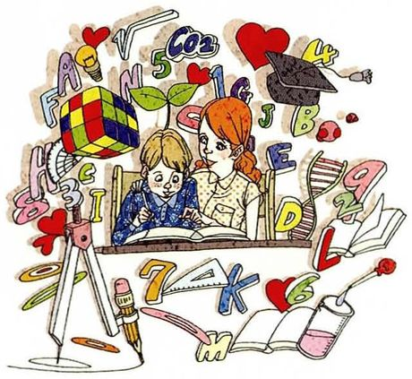
Education
The topicEducation
What to ask about教育。你的主场，可以谈得很具体：考试、学位、教育的目的。
Questions you can ask①What was the most useful thing you learned at school? ②Who was the best teacher you had, and what made them good? ③How much of what you studied do you actually use? ④Has education become more about qualifications than learning? ⑤What do you think schools should teach but don't?
13
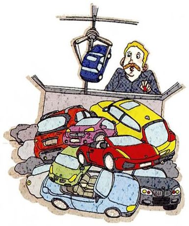
Cars
The topicCars
What to ask about汽车。可以问「有没有车」「怎么通勤」「车和城市的关系」。
Questions you can ask①Do you drive, or have you ever owned a car? ②How do you usually get around? ③What would make you give up driving? ④When did you learn, and who taught you? ⑤Do you think cities should be built less around cars?
14
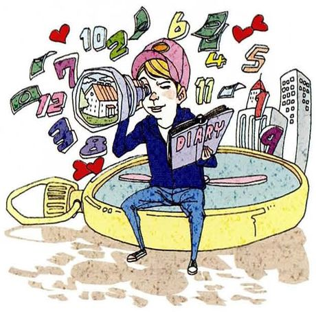
Future plans
The topicFuture plans
What to ask about未来计划。和第 7 课的区别：这里可以问得更细，包括「如果计划失败怎么办」。
Questions you can ask①What are you planning to do next? ②When did you start planning it? ③What's the first step? ④What will you do if it doesn't work out? ⑤How much of your plan depends on other people?
15
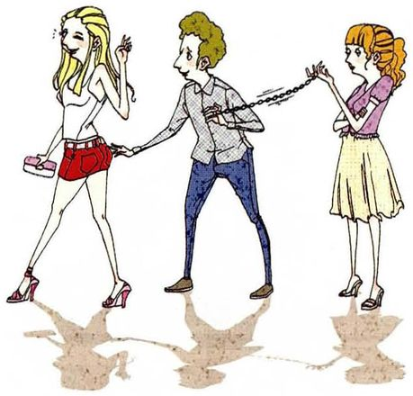
Marriage
The topicMarriage
What to ask about婚姻。第 10 题学过怎么谈 —— 可以问「为什么结婚」「什么时候算准备好」。
Questions you can ask①Do you want to get married? ②What would you say is the right age to marry, if there is one? ③How have your parents' or friends' marriages influenced how you think about it? ④What's the difference, practically, between living together and marrying? ⑤Why do you think people still marry when divorce is common?
16
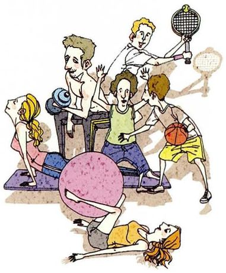
Exercise
The topicExercise
What to ask about锻炼。和第 13 课的 how often 连起来，但这一课可以问得更深：动机、障碍、效果。
Questions you can ask①What kind of exercise do you do, if any? ②How often do you manage it in a busy week? ③What stops you when you don't? ④What's the difference in how you feel, on a week you exercise and one you don't? ⑤Do you think exercise is a habit or a personality thing?
17
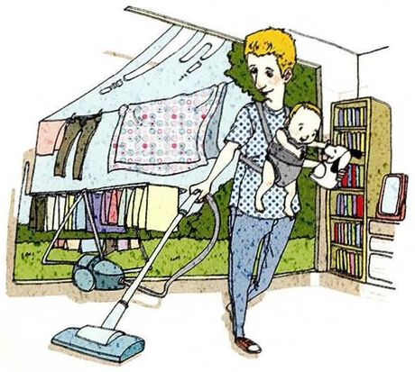
Househusband
The topicHousehusband
What to ask about家庭主夫。第 16 课第 8 题出现过，这一课是把它当话题展开 —— 正好可以问那个前提。
Questions you can ask①Would you be willing to be a househusband or housewife? ②What would the hardest part be? ③Would your family approve? ④Why do you think this is still unusual? ⑤Is domestic work treated as real work in your country?
18
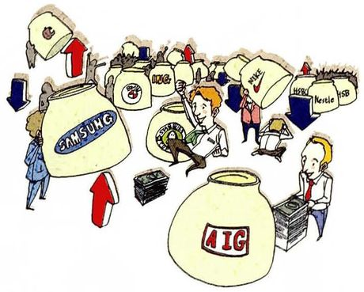
Stocks
The topicStocks
What to ask about股票。第 21 课第 4、5 题已经出现过，这里可以展开成完整的投资话题。
Questions you can ask①Have you ever invested in anything? ②How much risk would you be comfortable with? ③What would you do with a sudden windfall? ④Who taught you about money, if anyone? ⑤Do you think investing is a skill or mostly luck?
19
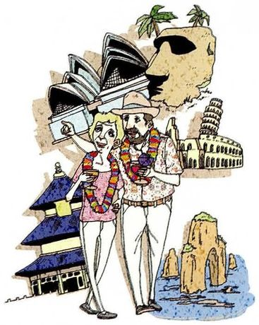
Retirement
The topicRetirement
What to ask about退休。可以问「想几岁退休」「退休后做什么」「怕不怕闲下来」。
Questions you can ask①When would you like to retire? ②What would you do with the time? ③Do you think you'd get bored? ④How is retirement different for your parents' generation than it will be for yours? ⑤What's the hardest thing about retiring, apart from the money?
20
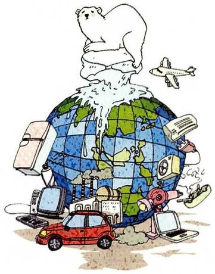
The environment
The topicThe environment
What to ask about环境。最难答得具体的话题，所以问题越具体越好 —— 别问「你关心环境吗」。
Questions you can ask①What do you actually do differently because of the environment? ②Has that changed in the last few years? ③What's the biggest thing you'd have to give up? ④Do you think individual choices matter, or only policy? ⑤How much of a problem do you think it is compared with ten years ago — better, worse, or just louder?
overall health / overall, it was good 总体的。可作形容词或副词
总体的
B · 让问题变具体的动词块
表达
音标
课上怎么用
中文
manage
/ˈmænɪdʒ/
How do you manage your health? 管理、应付。例题第一句用的就是它
管理
get into sth
/ɡet ˈɪntuː/
How did you get into it? 开始做某事、入门。问爱好的万能句
开始做
get out of it
/ɡet ˈaʊt əv ɪt/
What do you get out of it? 从中得到什么。问动机很好用
从中得到
work out
/wɜːrk aʊt/
How's that working out? 结果怎么样。口语极自然
结果如何
take up
/teɪk ʌp/
How much time does it take up? 占用（时间、空间）
占用
have in common
/hæv ɪn ˈkɑːmən/
What do you have in common? 有共同点。问关系时好用
共同点
compared with
/kəmˈperd wɪð/
compared with ten years ago 与……相比。引出第二层追问
与……相比
C · 讨论话题的框架词
词
音标
用法
中文
a big part of
/ə bɪɡ pɑːrt əv/
Health is a big part of my life. 很大一部分
很大一部分
the point of
/ðə pɔɪnt əv/
What's the point of travelling? ……的意义
意义
matters more
/ˈmætərz mɔːr/
What matters more, A or B? 更重要的是
更重要
in your opinion
/ɪn jɔːr əˈpɪnjən/
正式的「你认为」。口语更常说 do you think
在你看来
honestly
/ˈɑːnɪstli/
What's the point, honestly? 加在句末，语气真实
说实话
06老师大概率会问的问题
这一课老师会给你一个话题，要你现场造十个问句。准备的不是答案，是方法。
How do you come up with ten questions on a blank topic like "Family"?
I work through the question words in a fixed order — what, who, how often, when, why, how much, and then "what do you think". That's six or seven before I've thought about content at all. Then I look for the tense: past for how it started, present for how it is now, future for how it might change. Most topics give you ten that way without any inspiration.
把方法说清楚，比现场表演更重要。老师问的其实是「你有没有可复制的方法」。
Which of these twenty topics would be easiest? Which hardest?
Easiest is probably Hobbies or Weekend — everyone has something to say and nobody's being judged. Hardest is The environment, because the honest answers are all vague: most people know they should care and can't tell you what they actually do. And "Smoking and drinking" is the one I'd be most careful with, because the question itself can sound like an accusation.
区分「容易聊」和「容易答得具体」，是两种不同的难度。而且顺手点出哪个话题要注意语气，显示语用意识。
What's the difference between "What do you think about X" and "How do you feel about X"?
"What do you think" asks for a view you can defend; "how do you feel" asks for a reaction and doesn't require reasons. So the second one is friendlier and the first one is more useful if you actually want to discuss something. If I ask how you feel about marriage, you might say "fine" and we're stuck. If I ask what you think, you have to say something that can be argued with.
指出两种问法对对话的后果不同（一个会让对话停住，一个会引向讨论），这是很高的语用意识。
Ask me ten questions about my job.
Okay. What made you decide to teach? How long have you been doing it? Who do you teach mostly — adults or children? How do you plan a lesson: from a book or from the student? What's the hardest part of the job for you? How often do you get a class that doesn't work? What do you do when it doesn't? Has the job changed since you started? What would you do if you couldn't teach? And — what's the thing students do that you wish they wouldn't?
连续十个问题，顺序有递进：入门 → 日常 → 困难 → 假设 → 一句带幽默的收尾。最后那个问题（what do you wish students wouldn't do）会让老师真正想回答。
Is there a topic here you'd avoid asking about?
Stocks and Money, unless the other person raises them. Not because they're impolite in themselves, but because they invite comparison, and comparison is uncomfortable in a way that health or hobbies isn't. Someone who's doing badly financially will answer "how much do you save" with a number and then feel bad for the rest of the conversation. Health doesn't do that — being unfit is much less loaded than being broke.
A good question is one the other person hasn't answered a hundred times before — which usually means it's more specific than the obvious version. "Do you like your job" is a bad question. "What's the part of your job you'd keep if you could drop the rest" is the same topic and a completely different conversation.
用同一个话题的「坏问法」和「好问法」做对比，一句话就把标准说清了。这是整课的收束句。
07这节课最容易犯的错
前面六课练过的语法错误这里都会重现。下面挑的是这一课特别容易犯的。
✗What do you think is it the best way to stay healthy? ✓What do you think is the best way to stay healthy?
例题里就有这句。do you think 后面接陈述语序，is 不再倒装。本课头号错误。
✗How much of a problem is stress in terms of our overall health? 说成 How much problem… ✓How much of a problem is…?
「有多大问题」是固定说法：how much of a + 名词。漏掉 of a 整句就不成立。
✗How do you manage your health? 读成 /hɛl/ ✓health 读 /helθ/，一个音节，结尾是 th 的轻音
本课出现几十次，念错最明显。对比 help /help/ 的结尾是 p。
✗What do you do in the weekend? ✓What do you do at the weekend?
周末用 at the weekend（英式）或 on the weekend（美式），不用 in。
✗How often do you go to shopping? ✓How often do you go shopping?
go shopping 不加 to。同理 go swimming / go running / go fishing。
✗How did you get into it? — I start when I was ten. ✓I started when I was ten.
问句用了 did（过去），答句必须用过去时。这一课的追问都以过去时开始，答时最容易掉回现在时。
✗What you think about marriage? ✓What do you think about marriage?
漏助动词。这一课要连续造十个问句，说快了就会漏，尤其是连着问的时候。
✗Do you think which is more important, the work or the colleagues? ✓Which do you think is more important, the work or the colleagues?
疑问词要放句首，不能塞在 do you think 后面。本课第 5 题那种「二选一」的问句最容易犯。
08五十分钟怎么用
这一课的价值不在背问句，在于拿到任何话题都能立刻开口。所以练的是速度。
课前 10 分钟：背第 02 节的七词轮转What / How often / How much / When / Who / Why / What do you think。这七个词记住，20 个话题都不是问题。